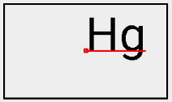

在開發自訂的物件時，一定會遇到需要自行繪製內容的時候。如果需要繪製的內容包含字串，就會遇到以一行呈現時，需要絕對置中的問題。
置中可以分成橫向和垂直。橫向置中可以直接透過Paint設定繪製的基準點。但垂直置中則因為字串繪製的基準線，並不是整個字串範圍的垂直中心，所以需要再經過位移，才可以在畫面上呈現垂直置中。
以下將逐步從前置的概念到運算方式進行介紹。以下將分成三步驟：
- 字串如何被繪製？
- 對應到程式中
- 置中繪製的方法
字串如何被繪製
首先要決定範圍，範例如下圖：

紅色框圈出了包含字串的最小範圍，而藍色線則是其在橫向上實際上會佔用的寬度。
至於高度要看以下的範例圖：

圖中的橫線由上而下依序如下表示：
- Top：較高字型的頂端。
- Ascent：大部分字型的頂端。
- Baseline：所有字型的基準線。
- Decent：大部分字型的底端。
- Bottom：較高字型的底端。
所以可以看出高度是top和bottom的距離。
接著再決定繪製的基準點要在基準線上的哪個位置，基準點的意義直接看範例如下：
紅線就是基準線，線長等於上述第一張圖的藍線。可以看出基準點是在基準線上移動，移動範圍是基準線的長度。所以依照圖例，基準點在左邊時，文字繪製方向就是左起。反之就是中間或是右起。
最後，在繪製時指定基準點在畫面上的座標位置。如果是右起，字串就會從基準點開始，向右且在基準線上繪製整個字串。
對應到程式
上述的繪製三步驟對應到程式碼依序如下：
Paint.getTextBounds()可以取得紅色框。Paint.measureText()可以取得藍線長度。Paint.getFontMetrics()可以得到一個FontMetrics：public static class FontMetrics {
public float top;
public float ascent;
public float descent;
public float bottom;
}要注意的是這些數值是相對於基準線的位置，所以
top和ascent是負數，反之descent和bottom是正數。Paint.setTextAlign()可以指定Align：public enum Align {
LEFT (0),
CENTER (1),
RIGHT (2);
...
}而要繪製字串時，用
Canvas.drawText(text, x, y, Paint paint)可以給定基準點的位置。
到這先做個總結，從以上的介紹和圖例可以觀察出，如果要繪製字串，其實並不需要全部有介紹到的函示。最後將來介紹如何將字串置中繪製。
置中繪製的方法
如果想要將字串繪製在畫面中心，預期的結果是字串的中心點為對準畫面中心。我們會先透過Canvas.drawText()將中心點設為基準點的位置，結果如下：

這並不是我們想要的置中。為了達到我們需要的結果，橫向應再往左一些，直向要再向下一些。
橫向
由於基準線已經是在置中位置，所以只要透過Paint.setTextAlign()將基準點設定成CENTER即可。結果如下：
直向
在這需要自行計算字串的中心距離畫面中心多遠，才知道要向下移動多少。所以首先我們先透過Paint.getFontMetrics()來取得FontMetrics，並透過top和bottom來取得字串高度：
高度 = bottom - top // 因為top是負的 |
依照前面圖例，我們可推知要移動的距離就是字串中心和基準線的距離，於是我們可以得到最後的距離公式如下：
字串中心與基準線距離 = 高度 / 2 - bottom = (bottom - top) / 2 - bottom |
進一步簡化則是：
移動距離 = -(bottom + top) / 2 |
最後呈現結果如下：
於此我們找到了繪製置中字串的公式。
What’s more
以上我們對於置中提出了解法，但這公式在整個字串只有小寫字母時，產生的結果就不如預期了：
原因是因為FontMetrics所畫出的字串範圍，是字串被繪製的合理範圍，並不是字串真正被繪製的範圍，求出來的中心點有時就不會符合需求。
想法一樣，要將字串的中心移動至畫面的中心點。不過這次我們嘗試另外一個方法來取得字串高度，就是先透過Paint.getTextBounds()來取得字串的實際範圍：
Rect centerRect = new Rect(); |
要特別注意的是，這邊取得的範圍是字串畫在預設起始點(0, 0)時的範圍，所以如果要將其top和bottom的範圍對齊字串，則還要做調整：
centerRect.offset(0, rect.centerY()); |
結果如下圖的小黑框：
於是我們就可以取得字串的垂直中心，並求出要移動的距離：
移動距離 = 中心點y - centerRect.centerY() |
結果如下：
運用這種算法的好處是，可以依照所要繪製的字串，動態調整要移動的距離。於是字串就算大小寫都包含，也可以如預期的置中：
非英文語系
以上介紹的兩種方法都可以使用。如中文此類，每個字的大小和範圍位置都是固定的，則可以直接使用第一個方法較為直接好理解，例圖如下：